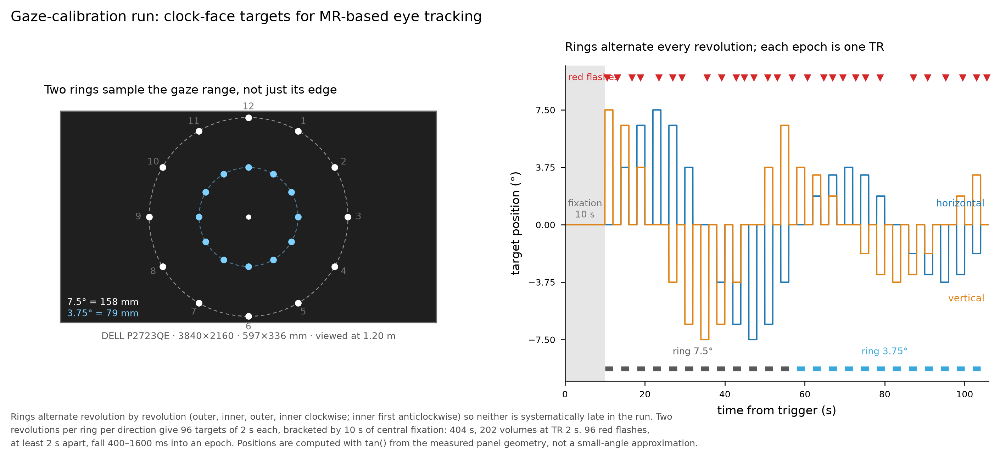

A PsychoPy run that produces the labelled gaze data DeepMReye needs to be fine-tuned on an individual participant.
A white dot steps around a virtual clock face on two rings, holding each position for one TR and returning to the centre for one TR between steps. Rings alternate revolution by revolution, clockwise then anticlockwise, so eccentricity is not confounded with time in the scanner. The participant looks at the dot wherever it appears and presses a key whenever it briefly turns red — that detection task is what enforces foveation of each target, which is what makes the run usable as calibration.

A decoder fine-tuned only at the edge of the gaze range is unconstrained in the interior, which is exactly where small involuntary movements sit. The inner ring samples that interior. Rings alternate revolution by revolution and start on a different ring in each direction, so both have the same mean time in the run.
With target and fixation epochs both equal to the TR, every volume falls entirely on a target or entirely on central fixation. No training label is a within-volume mixture.
Positions are computed with tan() from the measured physical size of the display,
so a stated eccentricity is that angle at the eye. The live resolution is read before the schedule
is built and again from the window that actually opened, because display scaling changes the pixel
pitch without changing the panel.
--screen-mm WIDTHxHEIGHT and
--distance. The script refuses to run full screen if a target would fall off the
display, and names the limit instead of drawing off-screen.
# verify the schedule and geometry — no PsychoPy needed, under a second
python test_calib_schedule.py
# desk check: 96 s, one ring, windowed
python neck_vib_calibration.py --participant TEST --session desk \
--windowed --distance 600 --rings 7.5 --revolutions 1 --lead-in 0 --lead-out 0
# full protocol, full screen
python neck_vib_calibration.py --participant P01 --session lab
# in the scanner
python neck_vib_calibration.py --participant P01 --session scanner --scanner \
--tr 2.0 --volumes 202 --series 7On Windows with the Standalone PsychoPy build, call its interpreter by absolute path if another Python is first on your PATH:
$PP = "C:\Program Files\PsychoPy\python.exe"
& $PP neck_vib_calibration.py --participant P01 --session lab| File | Contents |
|---|---|
*_gazelabels.npy | (volumes, 10, 2) intended gaze in
degrees — the array DeepMReye fine-tuning consumes |
*_log.tsv | Every event with its measured time: epoch onsets with intended versus actual, flashes, key presses |
*_events.tsv | BIDS-style events file for the GLM |
*_config.json | Protocol, screen and window specification, label convention, and the performance summary |
The label convention is stated explicitly in the config — units, origin, axis signs, what
t = 0 means, what a NaN means, the TR and the lead-volume count — because DeepMReye's
own loader flips the vertical axis for its screen and the sign must be checked before fine-tuning.
Use --tr, --volumes and --lead-volumes to make label row
i correspond to series volume i.
The performance block in the config is the first thing to read. Hit rate and
false alarms say whether the participant was performing the task; zero hits and zero
false alarms means no key was pressed at all, not that capture failed. Effective refresh rate,
frame intervals and dropped frames describe display timing. Onset lag is measured minus
intended epoch onset, excluding the first epoch, which carries window warm-up and is reported
separately.
The presentation loop is driven by the clock rather than by counting frames, so a late frame displaces one stimulus by one frame and nothing accumulates across the run.